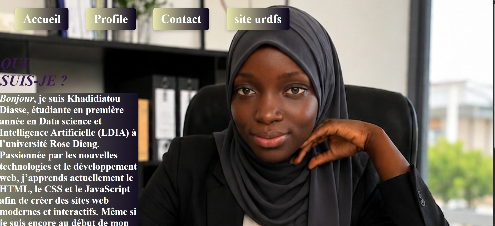

Portfolio Personnel
Technologies : HTML5, CSS3, JavaScript
Conception et développement d'un site web personnel responsive pour présenter mon parcours, mes compétences techniques et mes réalisations, avec une navigation fluide entre les différentes sections.
Objectifs clés : Structuration sémantique des pages, mise en page adaptative via Flexbox et Media Queries, et ajout d'interactions dynamiques en JavaScript natif (affichage/masquage de contenu).